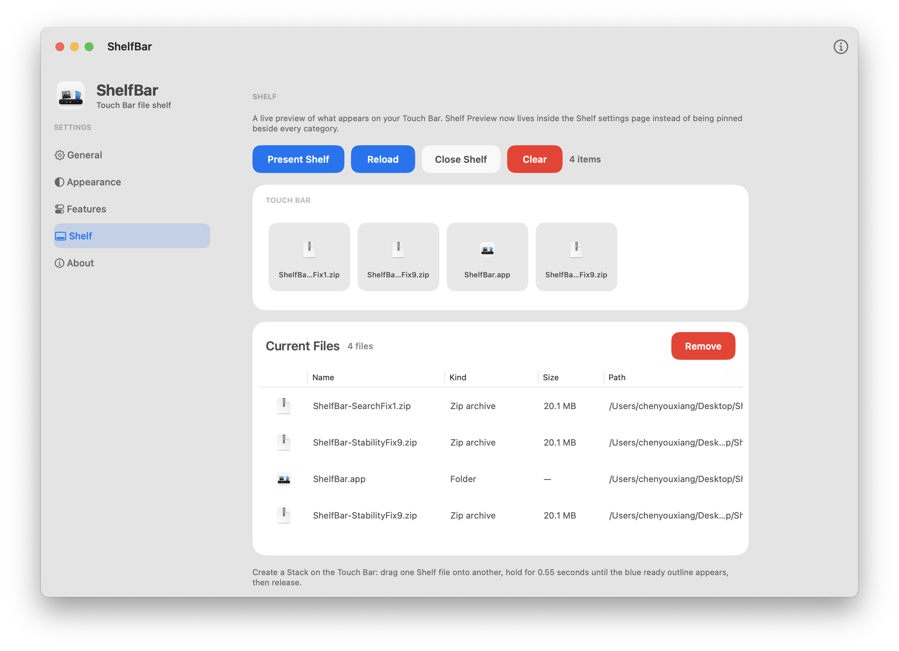
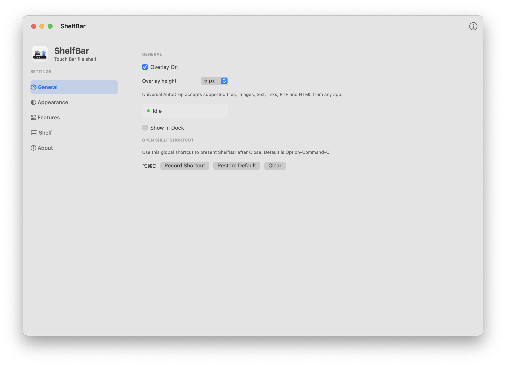
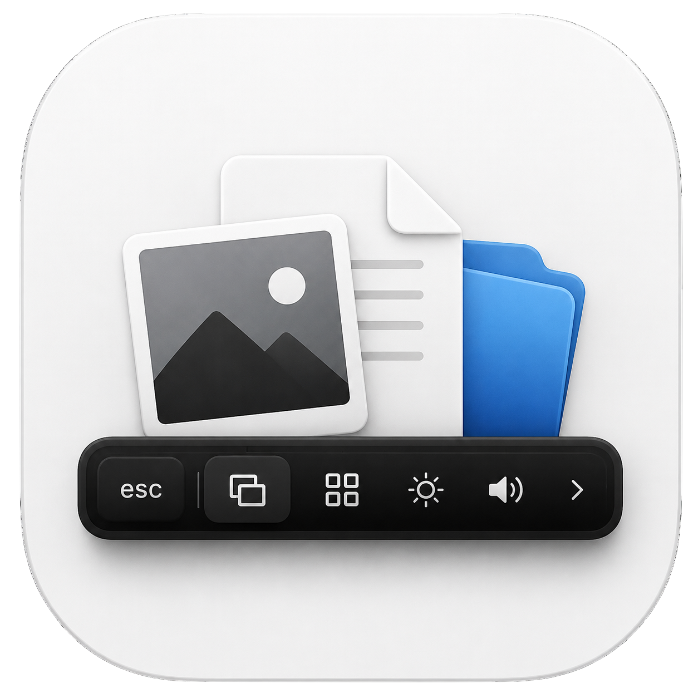

ShelfBar
ShelfBar
Files, clips, search, stacks, and pinned work stay one touch away.


ShelfBar
Get a Highlighter
Mark what matters on the Touch Bar, keep it visible, and stay inside the app you are already using.
Files
Files.
Drop files into ShelfBar and reopen them from the Touch Bar.
ShelfBar settings
In the app
Set files, clips, search, appearance, shortcuts, and shelf behavior from one quiet macOS window.

Touch bar
Files stay close.
Drop a file once, and it's always within reach.
ShelfBar keeps the files you're working on directly on the Touch Bar,
so you can jump back into your work without opening Finder or searching through folders.
Questions
Q&A
Get ShelfBar

Bring your Touch Bar back to work.
Files, clips, search, stacks, and pinned work stay one touch away.